Lab 9 – Unsupervised Learning
Philipp Broniecki and Lucas Leemann – Machine Learning 1K
(based on James et al. 2013)
We load data on violent crimes by state in the U.S. The dataset is included in the MASS package.
rm(list = ls())
# data on violent crimes by US state
library(MASS)
?USArrests
head(USArrests)## Murder Assault UrbanPop Rape
## Alabama 13.2 236 58 21.2
## Alaska 10.0 263 48 44.5
## Arizona 8.1 294 80 31.0
## Arkansas 8.8 190 50 19.5
## California 9.0 276 91 40.6
## Colorado 7.9 204 78 38.7# create a state variable
states <- row.names(USArrests)
states## [1] "Alabama" "Alaska" "Arizona" "Arkansas"
## [5] "California" "Colorado" "Connecticut" "Delaware"
## [9] "Florida" "Georgia" "Hawaii" "Idaho"
## [13] "Illinois" "Indiana" "Iowa" "Kansas"
## [17] "Kentucky" "Louisiana" "Maine" "Maryland"
## [21] "Massachusetts" "Michigan" "Minnesota" "Mississippi"
## [25] "Missouri" "Montana" "Nebraska" "Nevada"
## [29] "New Hampshire" "New Jersey" "New Mexico" "New York"
## [33] "North Carolina" "North Dakota" "Ohio" "Oklahoma"
## [37] "Oregon" "Pennsylvania" "Rhode Island" "South Carolina"
## [41] "South Dakota" "Tennessee" "Texas" "Utah"
## [45] "Vermont" "Virginia" "Washington" "West Virginia"
## [49] "Wisconsin" "Wyoming"# variable names in the data set
names(USArrests)## [1] "Murder" "Assault" "UrbanPop" "Rape"# summary stats mean and variance
apply(USArrests, 2, mean)## Murder Assault UrbanPop Rape
## 7.788 170.760 65.540 21.232apply(USArrests, 2, var)## Murder Assault UrbanPop Rape
## 18.97047 6945.16571 209.51878 87.72916PCA
Principal Component Analysis is a dimension reduction method. It can be useful to reduce the predictor space or to form a latent variable that is proxied by some variables.
We PCA on the data to capture some underlying measure of violence. To run PCA we use the prcomp() function.
# run pca
pr.out <- prcomp(USArrests, scale = TRUE)We can check what is in the model object and look at the values it returns.
# check model object
names(pr.out)## [1] "sdev" "rotation" "center" "scale" "x"pr.out$center## Murder Assault UrbanPop Rape
## 7.788 170.760 65.540 21.232pr.out$scale## Murder Assault UrbanPop Rape
## 4.355510 83.337661 14.474763 9.366385# "translation from x to z..."
pr.out$rotation## PC1 PC2 PC3 PC4
## Murder -0.5358995 0.4181809 -0.3412327 0.64922780
## Assault -0.5831836 0.1879856 -0.2681484 -0.74340748
## UrbanPop -0.2781909 -0.8728062 -0.3780158 0.13387773
## Rape -0.5434321 -0.1673186 0.8177779 0.08902432# dimensions of facorized output
dim(pr.out$x)## [1] 50 4# the factor scores for each observation
head(pr.out$x) # this what we could use as IVs## PC1 PC2 PC3 PC4
## Alabama -0.9756604 1.1220012 -0.43980366 0.154696581
## Alaska -1.9305379 1.0624269 2.01950027 -0.434175454
## Arizona -1.7454429 -0.7384595 0.05423025 -0.826264240
## Arkansas 0.1399989 1.1085423 0.11342217 -0.180973554
## California -2.4986128 -1.5274267 0.59254100 -0.338559240
## Colorado -1.4993407 -0.9776297 1.08400162 0.001450164We can illustrate which variable loads on which factor visually. We can also examine the effect of rotation.
# which component picks up most of the variance on the variables
biplot(pr.out, scale = 0)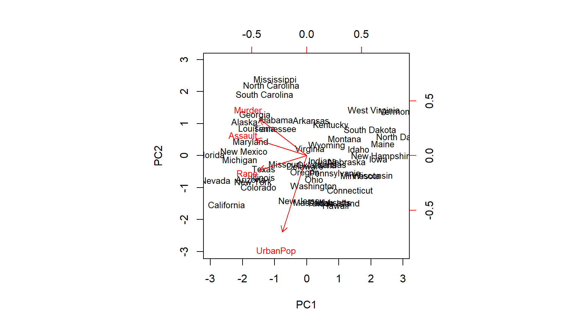
# turning things around
pr.out$rotation <- -pr.out$rotation
pr.out$x <- -pr.out$x
biplot(pr.out, scale = 0)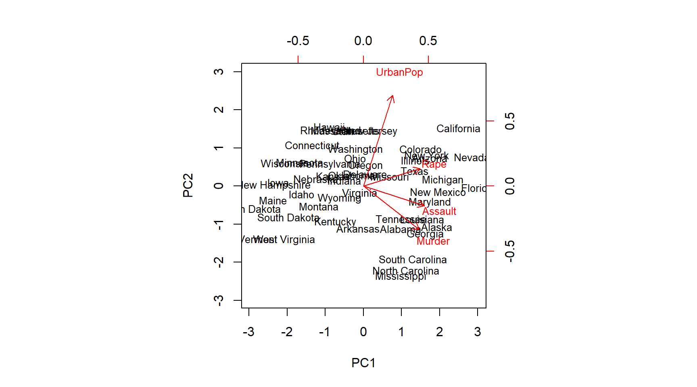
We are really interested in how much of the variance in the data our components capture. So first we get the standard deviation on the new scales and from that estimate the variance. We can then evaluate how much of the total variance is explained by each individual principal component.
# standard deviation on new scales
pr.out$sdev## [1] 1.5748783 0.9948694 0.5971291 0.4164494# variance
pr.var <- pr.out$sdev^2
pr.var## [1] 2.4802416 0.9897652 0.3565632 0.1734301# amount of variance explained by each component
pve <- pr.var / sum(pr.var)
pve## [1] 0.62006039 0.24744129 0.08914080 0.04335752We can plot variance explained by each component. The purpose is to determine how many components we need to account for most of the underlying variance. When additional principal components (PC’s) do not explain much more of the variance we not rely on them, e.g. as independent variables in a new model. It is common to look for the “elbow”. This is not a disciplined approach. Depending on the problem we could use cross-validatiation to determine how many components we need for a prediction problem.
# Finding the ellbow
plot(pve, xlab = "Principal Component",
ylab = "Proportion of Variance Explained ",
ylim = c(0, 1), type = "b")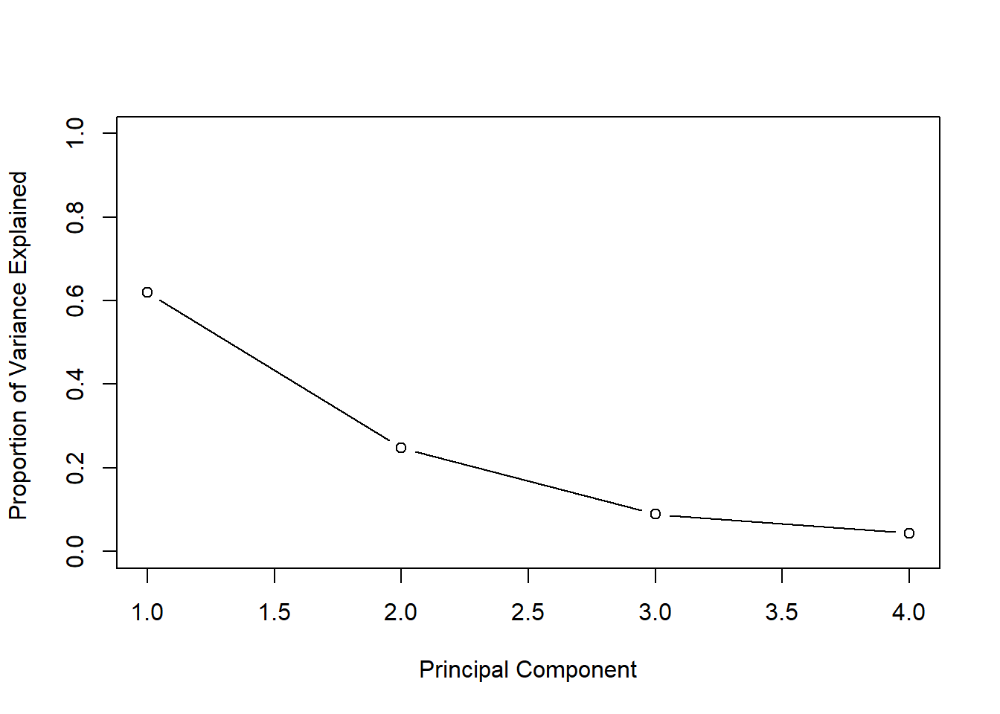
We can also plot the cumulative variance explained using the cumsum() function. Which returns the cumulative sums of a vector.
# new command - cumulative sums
a <- c(1, 2, 8, -3)
cumsum(a)## [1] 1 3 11 8# how much variance do we explain with each additional pc? What if # pc's = # vars?
plot(cumsum(pve), xlab = "Principal Component ",
ylab = " Cumulative Proportion of Variance Explained ",
ylim = c(0, 1), type = "b")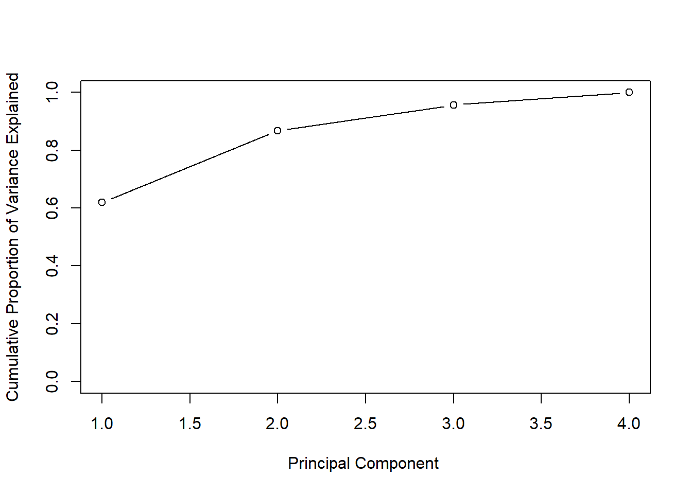
Clustering
We start out with k-means clustering. We try to dermine whether groups within our data exist that share similar features in the data. The supervised aspect of k-means clustering is that we need to decide ex-ante how many clusters we are looking for.
Below, we first create some fake data and visualize it.
set.seed(2)
# fake data; 2 columns of 50 obs from standard normal
x <- matrix(rnorm(50 * 2), ncol = 2)
# adding a systematic offset to first half of col 1 and 2
x[1:25, 1] <- x[1:25, 1] + 3 # offset by 3
x[1:25, 2] <- x[1:25, 2] - 4 # offset by -4
# visualize the data
plot(x, pch = 16, bty = "n")
In the plot we can clearly see the two groups. We perfom k-means clustering with the kmeans() function. The frist argument is the data, the second the amount of clusters, and the third the amount of times we try clustering using different starting points (we could potentially come up with different clusters depending on where we start (similar to a hill-climbing algorithm that may get stuck at a local peak rather than a global one).
We also check cluster assignment for each observation and color the dots in our plot according to which cluster they have been assigned to.
# run k-means clustering
km.out <- kmeans(x, 2, nstart = 20)
# for each observation what cluster has it been assigned to?
km.out$cluster## [1] 2 2 2 2 2 2 2 2 2 2 2 2 2 2 2 2 2 2 2 2 2 2 2 2 2 1 1 1 1 1 1 1 1 1 1
## [36] 1 1 1 1 1 1 1 1 1 1 1 1 1 1 1# how where the observations clustered
plot(x, col = (km.out$cluster + 1), # plus b/c the first color is black
main = "K-Means Clustering Results with K=2",
xlab = "", ylab = "", pch = 20, cex = 2, bty = "n")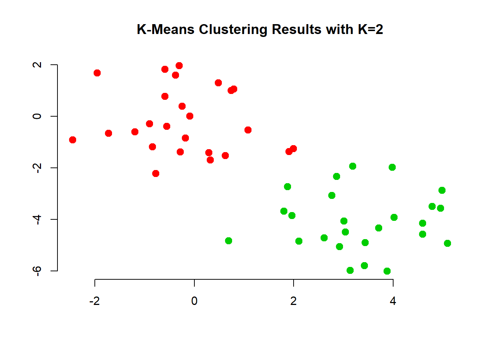
The first two groups where clearly visible to the naked eye. However, it would be hard to come up with tree groups. We do this an inspect the results.
# k=3
set.seed(4)
km.out <- kmeans(x, 3, nstart = 20)
km.out## K-means clustering with 3 clusters of sizes 10, 23, 17
##
## Cluster means:
## [,1] [,2]
## 1 2.3001545 -2.69622023
## 2 -0.3820397 -0.08740753
## 3 3.7789567 -4.56200798
##
## Clustering vector:
## [1] 3 1 3 1 3 3 3 1 3 1 3 1 3 1 3 1 3 3 3 3 3 1 3 3 3 2 2 2 2 2 2 2 2 2 2
## [36] 2 2 2 2 2 2 2 2 1 2 1 2 2 2 2
##
## Within cluster sum of squares by cluster:
## [1] 19.56137 52.67700 25.74089
## (between_SS / total_SS = 79.3 %)
##
## Available components:
##
## [1] "cluster" "centers" "totss" "withinss"
## [5] "tot.withinss" "betweenss" "size" "iter"
## [9] "ifault"# visualize cluster assignment again
plot(x, col = (km.out$cluster + 1),
main = "K-Means Clustering Results with K=3",
xlab = "", ylab = "", pch = 20, cex = 2)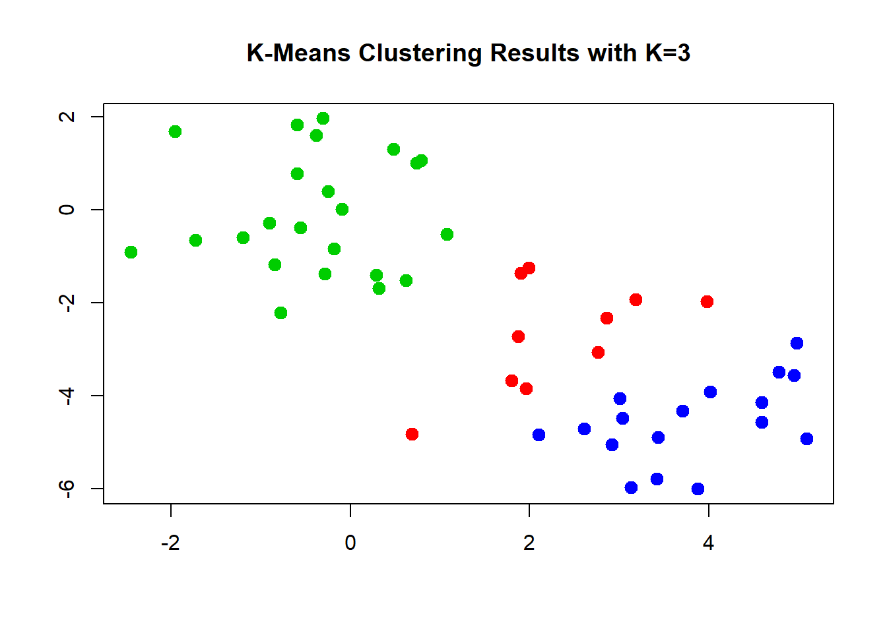
We can check what happens when we do not use enough randomly assigned starting points. We could end up with a solution that is far from optimal.
# set nstart large enough
set.seed(3)
km.out <- kmeans(x, 3, nstart = 1)
km.out$tot.withinss## [1] 104.3319km.out <- kmeans(x, 3, nstart = 20)
km.out$tot.withinss## [1] 97.97927Hierarchical Clustering
We now move to hierachical clustering where we do not pre-set the number of clusters. Rather this is typically down do determine the amount of clusters but also to check whether clustering will result in somehting that makes substantial sense.
The function is hclust(). We need to specify whether we want to cluster according to distance or correlation or some othe self-defined measure. Consider whehter data measured in different places and over time. Were we to use a correlation based measure, might pick up on common weather changes such as climate change. Were we to use distance we might pick up regional differences.
We also need to decide which method to use to determine which point should be included in the next step of the clustering. “complete” checks for the points outside a cluster what their maximum distance to points within the cluster is. The point with the smalles maximum distance will be included. “Average” takes the mean difference and “single” takes the minimum.
# run clustering
hc.complete <- hclust(dist(x), method = "complete")
hc.average <- hclust(dist(x), method = "average")
hc.single <- hclust(dist(x), method = "single")The choice of the method is consequential, we end up with different clusterings. The most common choice is “complete” or “average” which tends to produce more balanced dendrograms.
# complete (maximum distance)
par(mfrow = c(1, 3))
plot(hc.complete, main = "Complete Linkage",
xlab = "", sub = "", cex = 0.9)
# average
plot(hc.average, main = "Average Linkage",
xlab = "", sub = "", cex = 0.9)
# mimimum distance
plot(hc.single, main = "Single Linkage",
xlab = "", sub = "", cex = 0.9)
Based on these dendrograms we have to decide how many clusters make sense in the data. This may be quite difficult without substantial knowledge. We can check cluster assignment given an amount of clusters that we specify with the cutree() function.
# cluster assignment for 2 clusters
cutree(hc.complete, 2)## [1] 1 1 1 1 1 1 1 1 1 1 1 1 1 1 1 1 1 1 1 1 1 1 1 1 1 2 2 2 2 2 2 2 2 2 2
## [36] 2 2 2 2 2 2 2 2 2 2 2 2 2 2 2cutree(hc.average, 2)## [1] 1 1 1 1 1 1 1 1 1 1 1 1 1 1 1 1 1 1 1 1 1 1 1 1 1 2 2 2 2 2 2 2 1 2 2
## [36] 2 2 2 2 2 2 2 2 1 2 1 2 2 2 2cutree(hc.single, 2)## [1] 1 1 1 1 1 1 1 1 1 1 1 1 1 1 1 2 1 1 1 1 1 1 1 1 1 1 1 1 1 1 1 1 1 1 1
## [36] 1 1 1 1 1 1 1 1 1 1 1 1 1 1 1# cluster assignment for 4 clusters
cutree(hc.single, 4)## [1] 1 1 1 1 1 1 1 1 1 1 1 1 1 1 1 2 1 1 1 1 1 1 1 1 1 3 3 3 3 3 3 3 3 3 3
## [36] 3 3 3 3 3 3 4 3 3 3 3 3 3 3 3Just like with k-nearest neighbors, distance based clustering suffers when the variables are measured on different scales. Therefore, we scale our variables and cluster again.
# scaling to get variable on the same scale
xsc <- scale(x)
par( mfrow = c(1,1) )
plot(hclust(dist(xsc), method = "complete"),
main = "Hierarchical Clustering with Scaled Features ")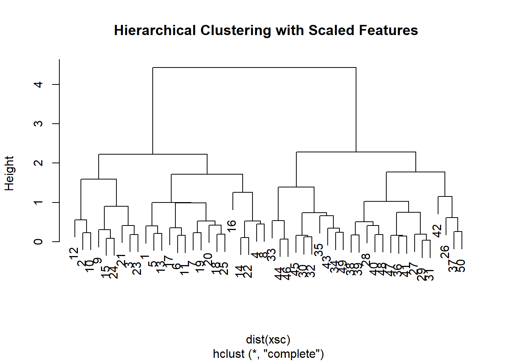
Instead of using distance as our similarity measure, we could use correlation. This makes sense when we are interested to uncover common trends. Climate change could be one example.
# use different similarity measure
x <- matrix(rnorm(30 * 3), ncol = 3) # new fake data
dd <- as.dist(1 - cor(t(x) ))
plot(hclust(dd, method = "complete"),
main = "Complete Linkage with Correlation-Based Distance",
xlab = "", sub = "")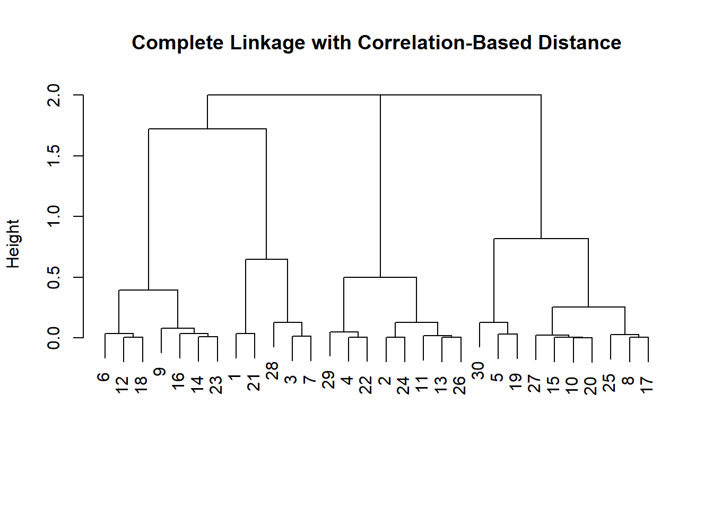
Example with Gene Expression data (from Hastie et al.)
We load the ISLR library and explore the data.
library(ISLR)
nci.labs <- NCI60$labs
nci.data <- NCI60$data
?NCI60
dim(nci.data)## [1] 64 6830# take a look at the data
nci.data[1:5, 1:5]## 1 2 3 4 5
## V1 0.300000 1.180000 0.550000 1.140000 -0.265000
## V2 0.679961 1.289961 0.169961 0.379961 0.464961
## V3 0.940000 -0.040000 -0.170000 -0.040000 -0.605000
## V4 0.280000 -0.310000 0.680000 -0.810000 0.625000
## V5 0.485000 -0.465000 0.395000 0.905000 0.200000head(nci.labs)## [1] "CNS" "CNS" "CNS" "RENAL" "BREAST" "CNS"Dimension Reduction with PCA
We perform PCA on the NCI60 data to reduce the dimensionality of the data.
We write a function that assigns colors continuously and we plot factors 1 and 2 against each other as well as factors 1 and 3.
pr.out <- prcomp(nci.data, scale = TRUE)
# make a nice plot - need a function
Cols <- function(vec) {
cols <- rainbow(length(unique(vec)))
return(cols[as.numeric(as.factor(vec))])
}
# plot
par(mfrow = c(1, 2))
plot(pr.out$x[, 1:2], col = Cols(nci.labs),
pch = 19, xlab = "Z1", ylab = "Z2")
plot(pr.out$x[, c(1, 3)], col = Cols(nci.labs),
pch = 19, xlab = "Z1", ylab = "Z3")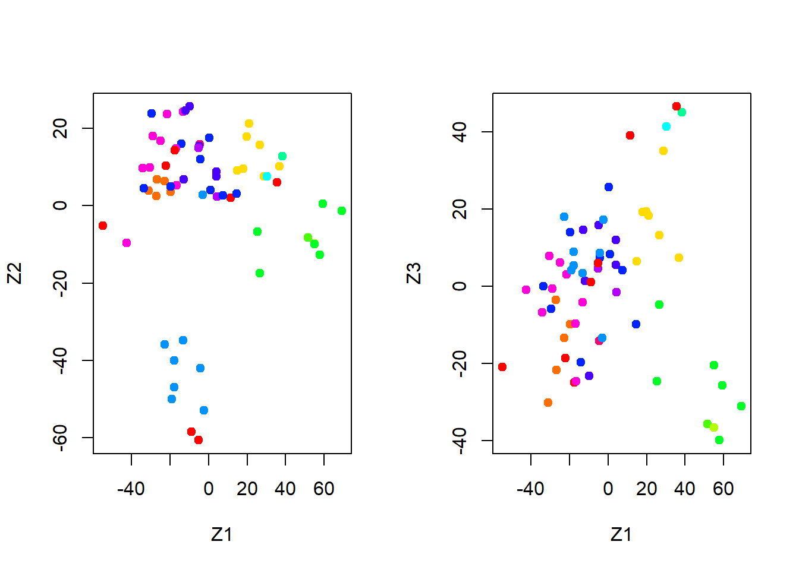
summary(pr.out)## Importance of components%s:
## PC1 PC2 PC3 PC4 PC5
## Standard deviation 27.8535 21.48136 19.82046 17.03256 15.97181
## Proportion of Variance 0.1136 0.06756 0.05752 0.04248 0.03735
## Cumulative Proportion 0.1136 0.18115 0.23867 0.28115 0.31850
## PC6 PC7 PC8 PC9 PC10
## Standard deviation 15.72108 14.47145 13.54427 13.14400 12.73860
## Proportion of Variance 0.03619 0.03066 0.02686 0.02529 0.02376
## Cumulative Proportion 0.35468 0.38534 0.41220 0.43750 0.46126
## PC11 PC12 PC13 PC14 PC15
## Standard deviation 12.68672 12.15769 11.83019 11.62554 11.43779
## Proportion of Variance 0.02357 0.02164 0.02049 0.01979 0.01915
## Cumulative Proportion 0.48482 0.50646 0.52695 0.54674 0.56590
## PC16 PC17 PC18 PC19 PC20
## Standard deviation 11.00051 10.65666 10.48880 10.43518 10.3219
## Proportion of Variance 0.01772 0.01663 0.01611 0.01594 0.0156
## Cumulative Proportion 0.58361 0.60024 0.61635 0.63229 0.6479
## PC21 PC22 PC23 PC24 PC25 PC26
## Standard deviation 10.14608 10.0544 9.90265 9.64766 9.50764 9.33253
## Proportion of Variance 0.01507 0.0148 0.01436 0.01363 0.01324 0.01275
## Cumulative Proportion 0.66296 0.6778 0.69212 0.70575 0.71899 0.73174
## PC27 PC28 PC29 PC30 PC31 PC32
## Standard deviation 9.27320 9.0900 8.98117 8.75003 8.59962 8.44738
## Proportion of Variance 0.01259 0.0121 0.01181 0.01121 0.01083 0.01045
## Cumulative Proportion 0.74433 0.7564 0.76824 0.77945 0.79027 0.80072
## PC33 PC34 PC35 PC36 PC37 PC38
## Standard deviation 8.37305 8.21579 8.15731 7.97465 7.90446 7.82127
## Proportion of Variance 0.01026 0.00988 0.00974 0.00931 0.00915 0.00896
## Cumulative Proportion 0.81099 0.82087 0.83061 0.83992 0.84907 0.85803
## PC39 PC40 PC41 PC42 PC43 PC44
## Standard deviation 7.72156 7.58603 7.45619 7.3444 7.10449 7.0131
## Proportion of Variance 0.00873 0.00843 0.00814 0.0079 0.00739 0.0072
## Cumulative Proportion 0.86676 0.87518 0.88332 0.8912 0.89861 0.9058
## PC45 PC46 PC47 PC48 PC49 PC50
## Standard deviation 6.95839 6.8663 6.80744 6.64763 6.61607 6.40793
## Proportion of Variance 0.00709 0.0069 0.00678 0.00647 0.00641 0.00601
## Cumulative Proportion 0.91290 0.9198 0.92659 0.93306 0.93947 0.94548
## PC51 PC52 PC53 PC54 PC55 PC56
## Standard deviation 6.21984 6.20326 6.06706 5.91805 5.91233 5.73539
## Proportion of Variance 0.00566 0.00563 0.00539 0.00513 0.00512 0.00482
## Cumulative Proportion 0.95114 0.95678 0.96216 0.96729 0.97241 0.97723
## PC57 PC58 PC59 PC60 PC61 PC62
## Standard deviation 5.47261 5.2921 5.02117 4.68398 4.17567 4.08212
## Proportion of Variance 0.00438 0.0041 0.00369 0.00321 0.00255 0.00244
## Cumulative Proportion 0.98161 0.9857 0.98940 0.99262 0.99517 0.99761
## PC63 PC64
## Standard deviation 4.04124 2.148e-14
## Proportion of Variance 0.00239 0.000e+00
## Cumulative Proportion 1.00000 1.000e+00plot(pr.out)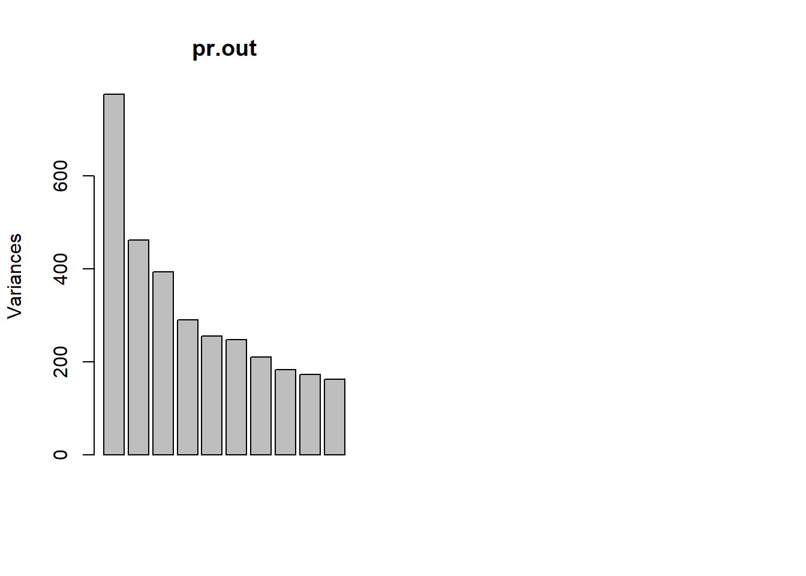
To get an idea we look at the variance explained per factor and the cumulative variance explained.
pve <- 100 * pr.out$sdev^2 / sum(pr.out$sdev^2)
par(mfrow = c(1, 2))
plot(pve, type = "o", ylab = "PVE",
xlab = "Principal Component", col = " blue ")
plot(cumsum(pve), type = "o", ylab = "Cumulative PVE",
xlab = "Principal Component ", col = " brown3 ")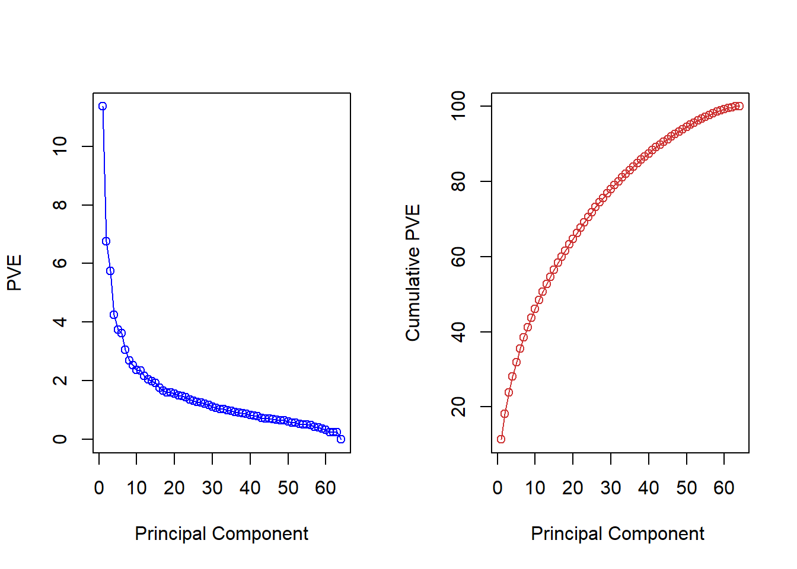
Choosing the amount of components is hard without substantial knowledge but could look for the elbow in the left-hand plot e.g. The choice is essentially and infomed qualitative decision.
Hierarcical clustering with Gene Data
We first ensure that the variables are scale free by normalizing them. We then draw a dendrograms for the different methods to determine cluster assginment: “complete”, “average”, “single”.
sd.data <- scale(nci.data)
par(mfrow = c(1, 3))
data.dist <- dist(sd.data)
plot(hclust(data.dist), labels = nci.labs,
main = "Complete Linkage", xlab = "", sub = "", ylab = "")
plot(hclust(data.dist, method = "average"),
labels = nci.labs, main = "Average Linkage",
xlab = "", sub = "", ylab = "")
plot(hclust(data.dist, method = "single"),
labels = nci.labs, main = "Single Linkage",
xlab = "", sub = "", ylab = "")
We then explore which group an observation will be assigned to if we decide on four clusters.
# cluster object
hc.out <- hclust(data.dist)
hc.clusters <- cutree(hc.out, 4)
table(hc.clusters, nci.labs)## nci.labs
## hc.clusters BREAST CNS COLON K562A-repro K562B-repro LEUKEMIA MCF7A-repro
## 1 2 3 2 0 0 0 0
## 2 3 2 0 0 0 0 0
## 3 0 0 0 1 1 6 0
## 4 2 0 5 0 0 0 1
## nci.labs
## hc.clusters MCF7D-repro MELANOMA NSCLC OVARIAN PROSTATE RENAL UNKNOWN
## 1 0 8 8 6 2 8 1
## 2 0 0 1 0 0 1 0
## 3 0 0 0 0 0 0 0
## 4 1 0 0 0 0 0 0We plot the dendrogram and a cutoff line.
# plot dendrogram
par(mfrow = c(1, 1))
plot(hc.out, labels = nci.labs)
abline(h = 139, col = "red")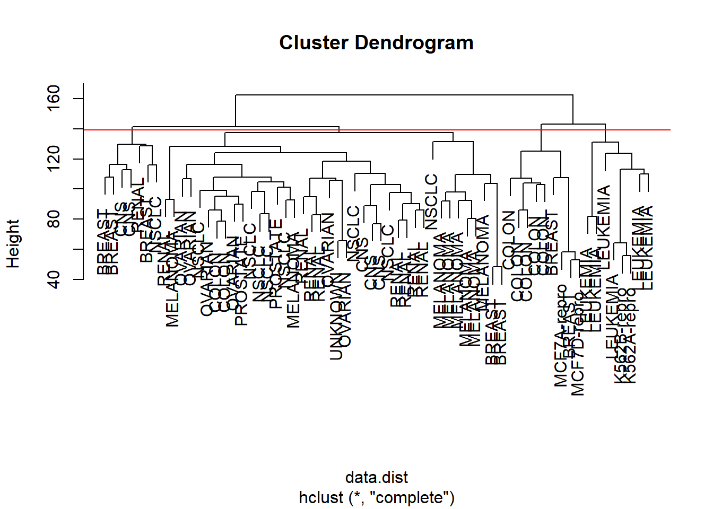
Finally, we perform k-means clustering with four clusters to determine whether cluster assignment will be similar.
# K-means
set.seed(2)
km.out <- kmeans(sd.data, 4, nstart = 20)
km.clusters <- km.out$cluster
# do we get the same clusters?
table(km.clusters, hc.clusters)## hc.clusters
## km.clusters 1 2 3 4
## 1 11 0 0 9
## 2 0 0 8 0
## 3 9 0 0 0
## 4 20 7 0 0We can see that the resulting grouping is quite different. This is where substantial knowledge and interpretation comes in.